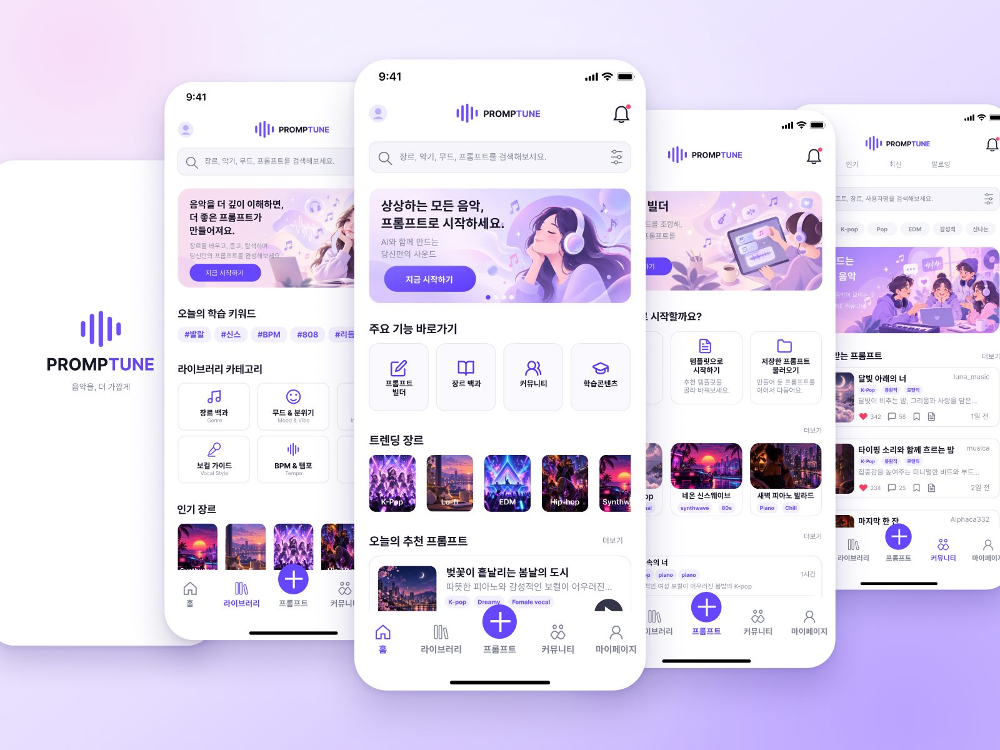
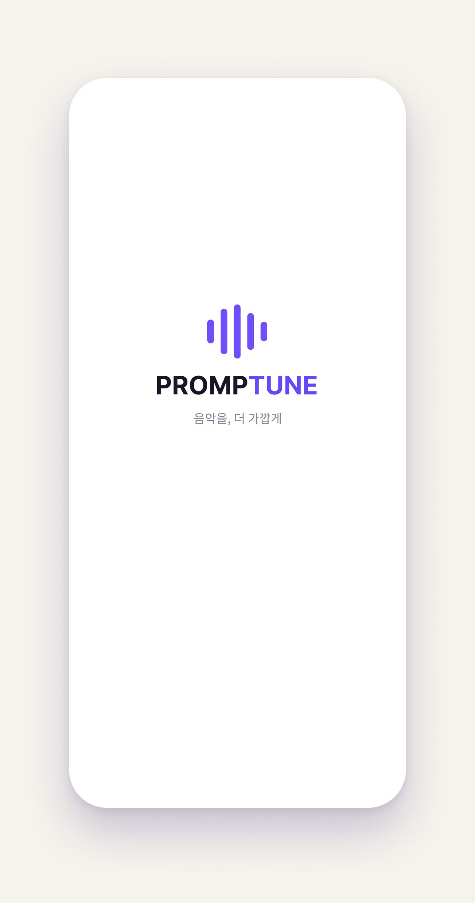
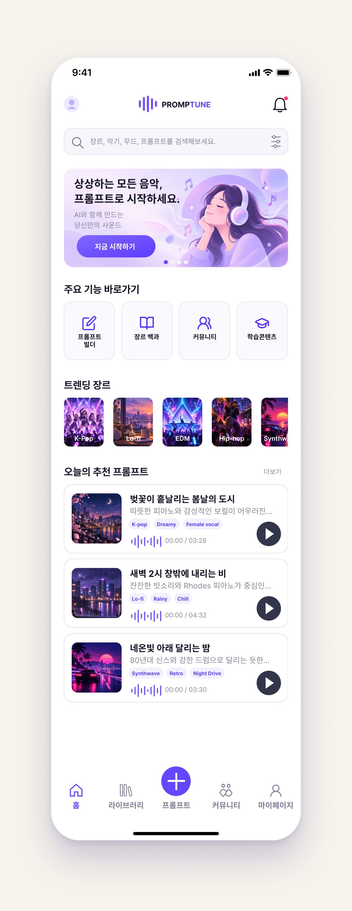
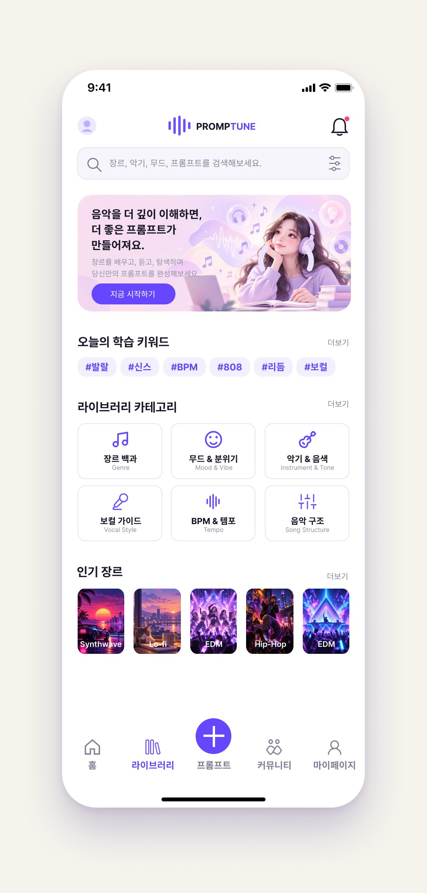
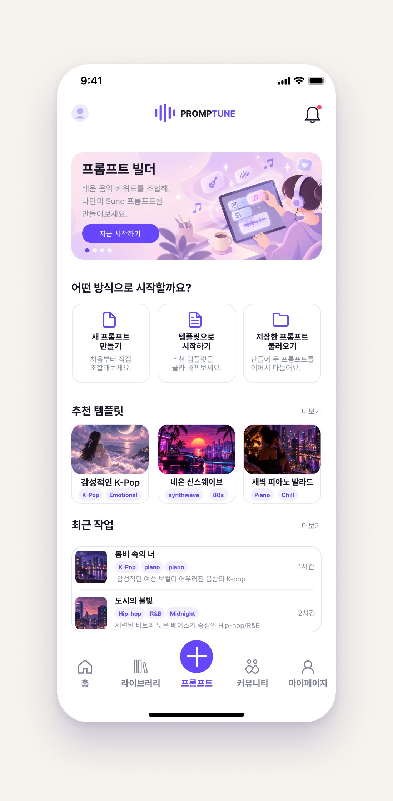
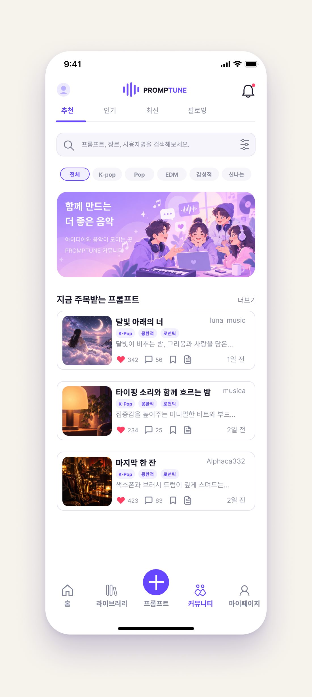
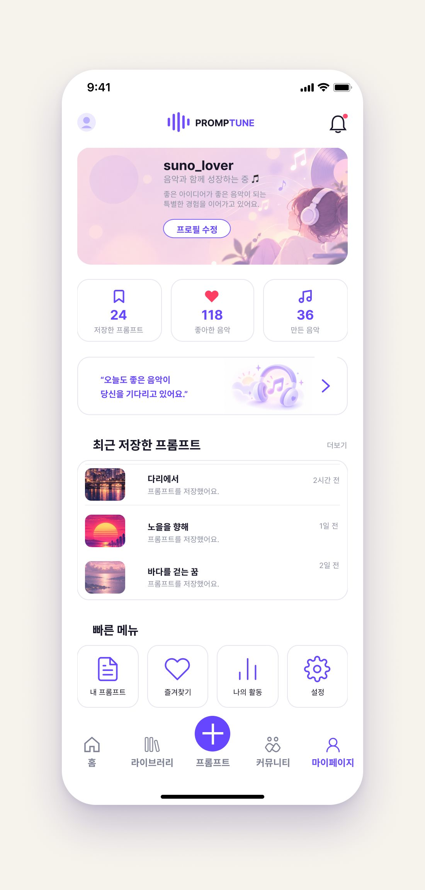

Figma 앱 UI 디자인
PROMPTUNE · AI 음악 프롬프트 학습 앱

스플래시부터 하단 탭, 상세 화면까지 실제 앱처럼 눌러 볼 수 있습니다. 처음 불러올 때 몇 초 걸릴 수 있어요. · Figma에서 새 창으로 열기
작업 설명을 정리하고 있습니다. 화면을 먼저 감상해 주세요.
프로젝트 개요Overview
PROMPTUNE은 AI 음악 생성 서비스(Suno)에 넣을 프롬프트를 더 잘 쓰도록 돕는 모바일 앱입니다. 장르·무드·악기·BPM 같은 음악 키워드를 배우는 라이브러리, 배운 키워드를 조합해 프롬프트를 만드는 프롬프트 빌더, 만든 프롬프트를 나누는 커뮤니티를 하단 탭 다섯 개(홈·라이브러리·프롬프트·커뮤니티·마이페이지)로 묶었습니다.
담당 작업Role
혼자 진행한 개인 작업으로, 앱 콘셉트 기획과 스타일가이드, 완성 화면 디자인, 프로토타입 구성까지 모두 맡았습니다.
- Figma
- ChatGPT
- Claude
제작 목적Purpose
“음악을 더 깊이 이해하면, 더 좋은 프롬프트가 만들어진다”는 생각에서 출발했습니다. 음악 용어를 몰라도 키워드를 배우고, 고르고, 조합하는 흐름을 따라가다 보면 자연스럽게 원하는 음악을 설명하는 프롬프트가 완성되도록 하는 것을 목표로 했습니다.
제작 판단Decisions
하단 탭 가운데의 + 버튼 — 이 앱에서 가장 중요한 일은 프롬프트를 만들고, 보관하고, 나누는 것이라고 생각했습니다. 그래서 만들기는 하단 탭 한가운데의 + 버튼으로, 보관은 마이페이지, 공유는 커뮤니티 탭으로 두었습니다. 특히 + 버튼은 어느 화면에서든 한눈에 보이고 바로 누를 수 있어, 처음 쓰는 사람도 직관적으로 프롬프트 만들기를 시작할 수 있도록 했습니다.
밝은 보라색 테마 — 음악 키워드를 ‘배운다’는 딱딱한 느낌보다, 스스로 탐색하고 다른 사람들과 나눈다는 밝은 느낌을 주고 싶었습니다. 그래서 밝은 보라색을 테마 색으로 정했습니다.
제작 과정Process
Figma 파일을 단계별 페이지로 나눠 기획서 → 와이어프레임 → 무드보드 → 스타일가이드 → 앱 화면 디자인 순서로 진행했습니다. 완성한 화면은 프로토타입으로 연결해 스플래시부터 하단 탭 이동, 상세 화면까지 실제 앱처럼 눌러 볼 수 있게 했습니다(위 Prototype에서 직접 눌러 볼 수 있습니다).
AI 활용 범위AI Usage
AI가 도운 부분 — 배너·장르 카드 등에 들어간 이미지와 와이어프레임은 ChatGPT로 만들었습니다. 프로토타입 연결과 포트폴리오용 이미지 정리에는 Claude를 활용했습니다.
직접 한 부분 — 앱 콘셉트를 기획하고, 와이어프레임을 바탕으로 스타일가이드와 완성 화면을 Figma에서 직접 디자인했습니다.
회고Retrospective
작업의 취지와 콘셉트는 괜찮았다고 생각합니다. 다만 욕심이 나서 요소를 계속 추가하다 보니 작업 범위가 예상보다 훨씬 넓어졌고, 그만큼 직접 만들지 못하고 이미지로 대체한 부분이 많아 아쉬움이 남습니다. 이 부분은 시간이 날 때마다 보완해 나갈 예정입니다.

앱을 켜면 음파 막대 다섯 개가 자라나며 로고와 태그라인 ‘음악을, 더 가깝게’가 나타납니다.
- 로고 중심에서 퍼지는 링으로 화면 전환
- 잠시 뒤 홈으로 자동 이동

‘상상하는 모든 음악, 프롬프트로 시작하세요.’ 앱의 주요 기능으로 바로 들어가는 첫 화면입니다.
- 주요 기능 바로가기 — 프롬프트 빌더·장르 백과·커뮤니티·학습콘텐츠
- 트렌딩 장르와 오늘의 추천 프롬프트
- 가운데 + 버튼으로 어디서든 프롬프트 만들기

프롬프트에 쓸 음악 키워드를 배우는 곳입니다. 음악을 더 깊이 이해할수록 더 좋은 프롬프트가 만들어집니다.
- 오늘의 학습 키워드
- 카테고리 6개 — 장르 백과·무드·악기·보컬·BPM·음악 구조
- 인기 장르

배운 키워드를 조합해 나만의 Suno 프롬프트를 만드는 프롬프트 빌더의 시작 화면입니다.
- 시작 방식 3가지 — 새로 만들기·템플릿·저장한 프롬프트 불러오기
- 추천 템플릿과 최근 작업

다른 사람이 만든 프롬프트를 둘러보고, 내 프롬프트를 나누는 곳입니다.
- 추천·인기·최신·팔로잉 탭과 장르 필터
- 지금 주목받는 프롬프트 — 좋아요·댓글·저장

내가 저장하고 만든 프롬프트와 활동을 한곳에 모아 보는 화면입니다.
- 프로필과 활동 요약
- 최근 저장한 프롬프트
- 빠른 메뉴 — 내 프롬프트·즐겨찾기·나의 활동·설정